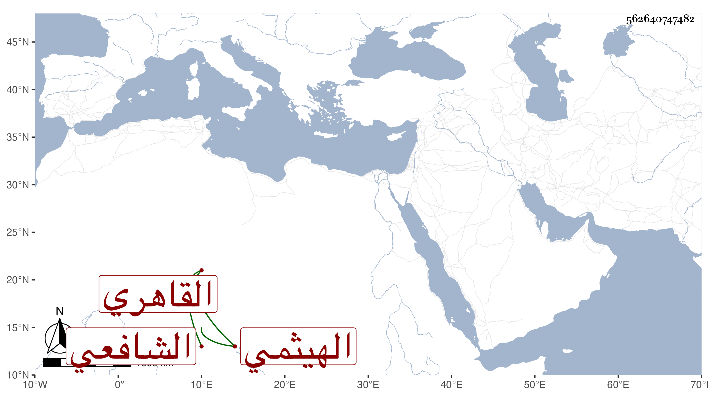

0902Sakhawi.DawLamic.ITO20230111-ara1.EIS1600.562640747482
Biography ID: 562640747482
469
عبد الرحيم بن محمد بن أبي بكر بن سليمان بن أبي بكر بن عمر بن صلح الزين الهيثمي ثم القاهري الشافعي والد أبي البركات محمد وأخو عبد الله وعبد العزيز وابن أخي الحافظ النور الهيثمي . لازم العراقي حتى قرأ عليه تخريج الأحياء وغيره من تصانيفه وكذا لازم ولده الولي بل واستملى عليه أحيانا وكتب بخطه أشياء وسمع أيضا على الهيثمي وغيره وعلى والده فيما ظنه الزين رضوان ، ولي مشيخة الزمامية بالصحراء وغير ذلك . وكان فاضلا تأخر إلى بعد الثلاثين رحمه الله .
